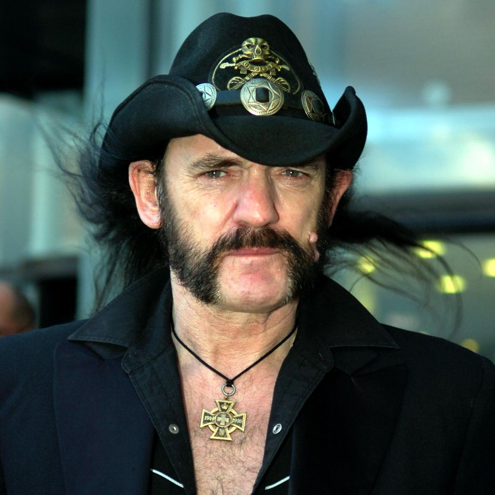
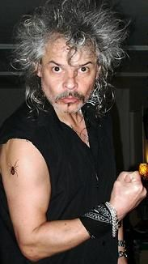
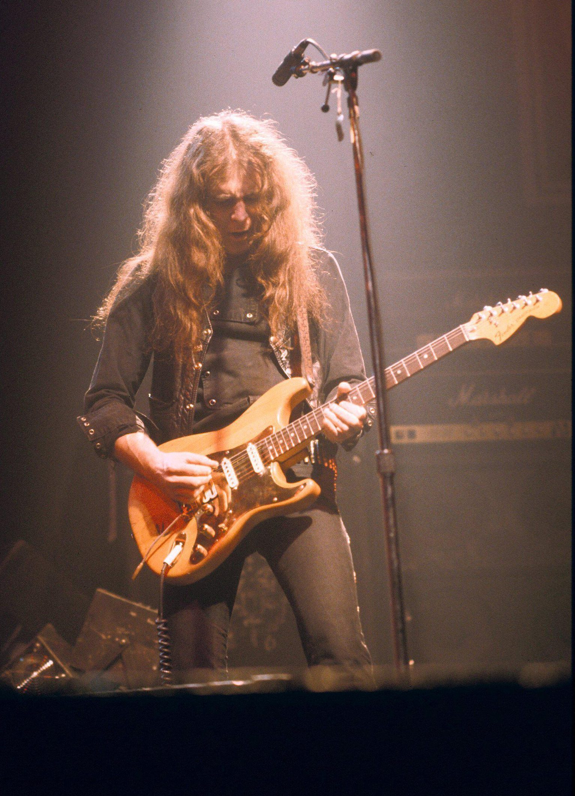
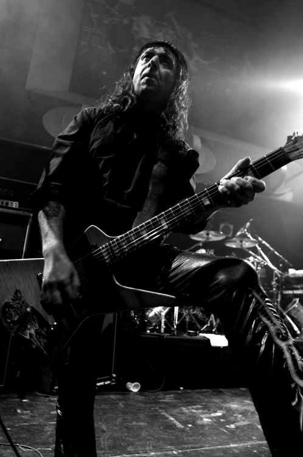

Motörhead byla anglická heavymetalová skupina, kterou roku 1975 založil baskytarista, zpěvák a skladatel Ian "Lemmy" Kilmister. Kapela je často považována za předchůdce nové vlny britského heavy metalu, která na konci sedmdesátých a začátku osmdesátých let znovu „nakopla“ heavy metal. Jejich styl je nejčastěji klasifikovaný jako heavy metal, kapela je jeho součástí a ovlivnila řadu hudebních žánrů, zejména thrash metal a speed metal. Lemmy však vždy trval na tom, že jsou rock and rollovou kapelou. Říkal, že mají více společného s punkovými kapelami, ale se svým jedinečným zvukem byli Motörhead obklopeni jak punkovou, tak metalovou scénou. Lemmy zemřel 28. prosince 2015 na srdeční arytmii a srdeční selhání poté, co mu byla diagnostikována rakovina prostaty. Den po jeho smrti potvrdili bubeník Mikkey Dee a kytarista Phil Campbell, že Motörhead ukončí činnost. Do roku 2018 zemřeli všichni tři členové klasické sestavy Motörhead (Lemmy, Taylor a Clarke ).
Členové kapely
Lemmy Kilmister
Zpěv a baskytara
Jeho zjev a vystupování, mateřské znamení na tváři, pejzy s knírem a drsný hlas z něj okamžitě udělaly kultovní osobnost, známou i mimo svět rockové muziky. Lemmy je také považovaný za jednoho z největších metalových muzikantů vůbec.
Phil Taylor
Bicí
Phil Taylor, lépe známý jako „Philthy Animal“ Taylor nebo „Philthy“ Phil Taylor byl profesionální bubeník z města Chesterfield v Anglii. Jde o původního bubeníka heavymetalové skupiny Motörhead. Zemřel 11. listopadu 2015 po nemoci.
Eddie Clarke
Kytara
„Fast“ Eddie Clarke byl anglický kytarista. ako teenager prošel několika kapelami, například The Bitter End. Do roku 1973 hrál lokální vystoupení a právě rokem 1973 se stal členem kapely Zeus, kterou vedl zpěvák Curtis Knight. V roce 1976 se stal členem skupiny Motörhead, s níž vystupoval do roku 1982.
Phillip „Wizzo“ Campbell
Kytara
V roce 1984 sháněla skupina Motörhead nového kytaristu. Do nejužšího výběru se dostali Michael Burston a právě Phil Campbell. Skupina však sháněla jen jednoho člena, ale její frontman Lemmy nakonec, poté, co je uslyšel hrát společně, přijal oba. Se skupinou hrál až do roku 2015, kdy se po smrti Lemmyho rozpadla.
